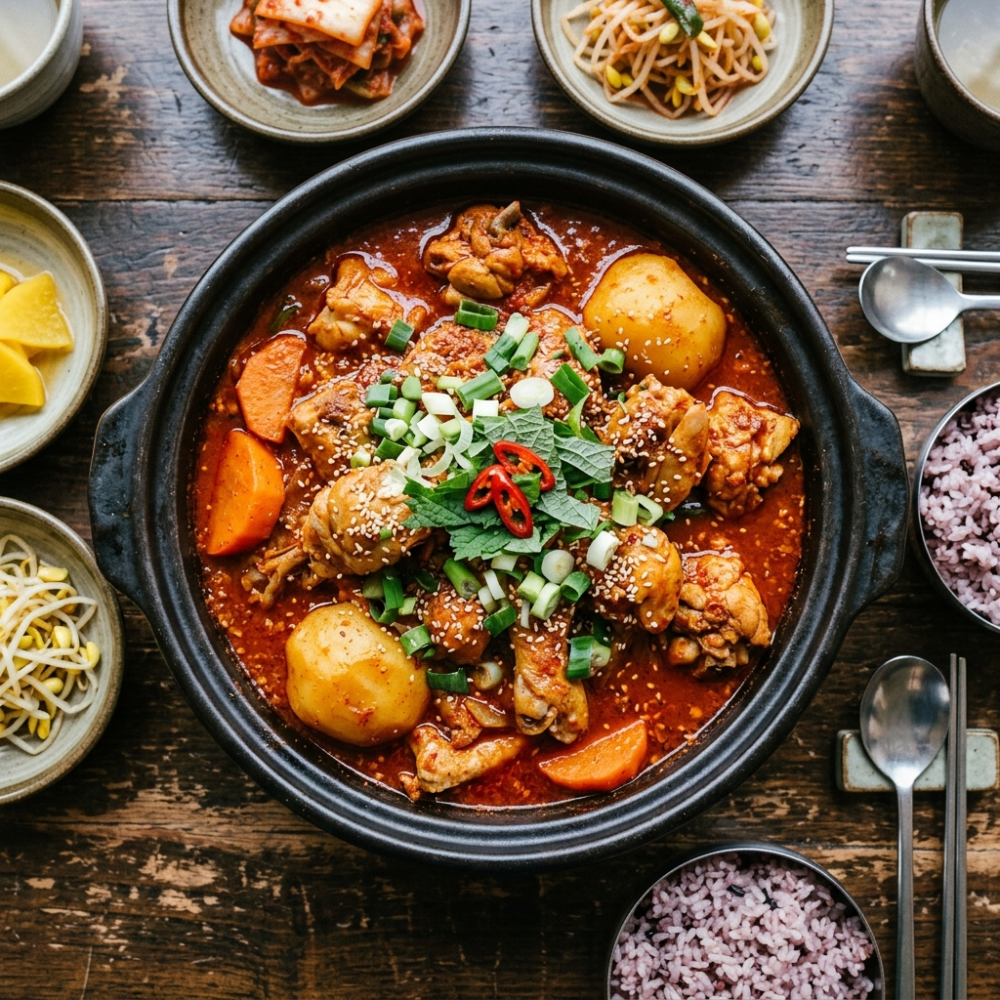
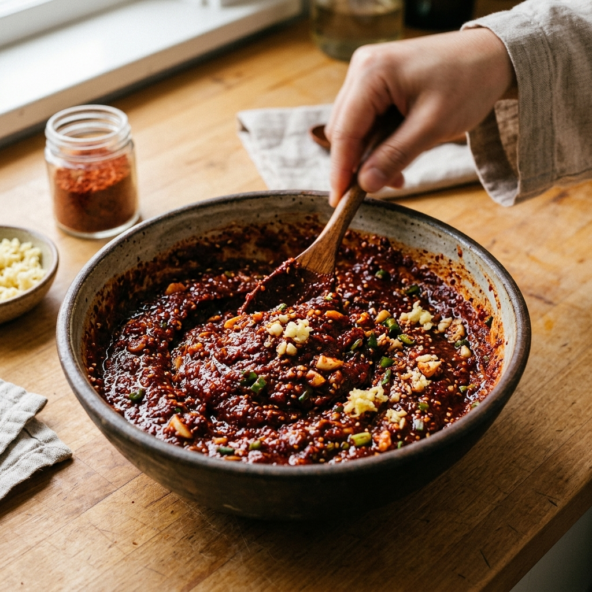
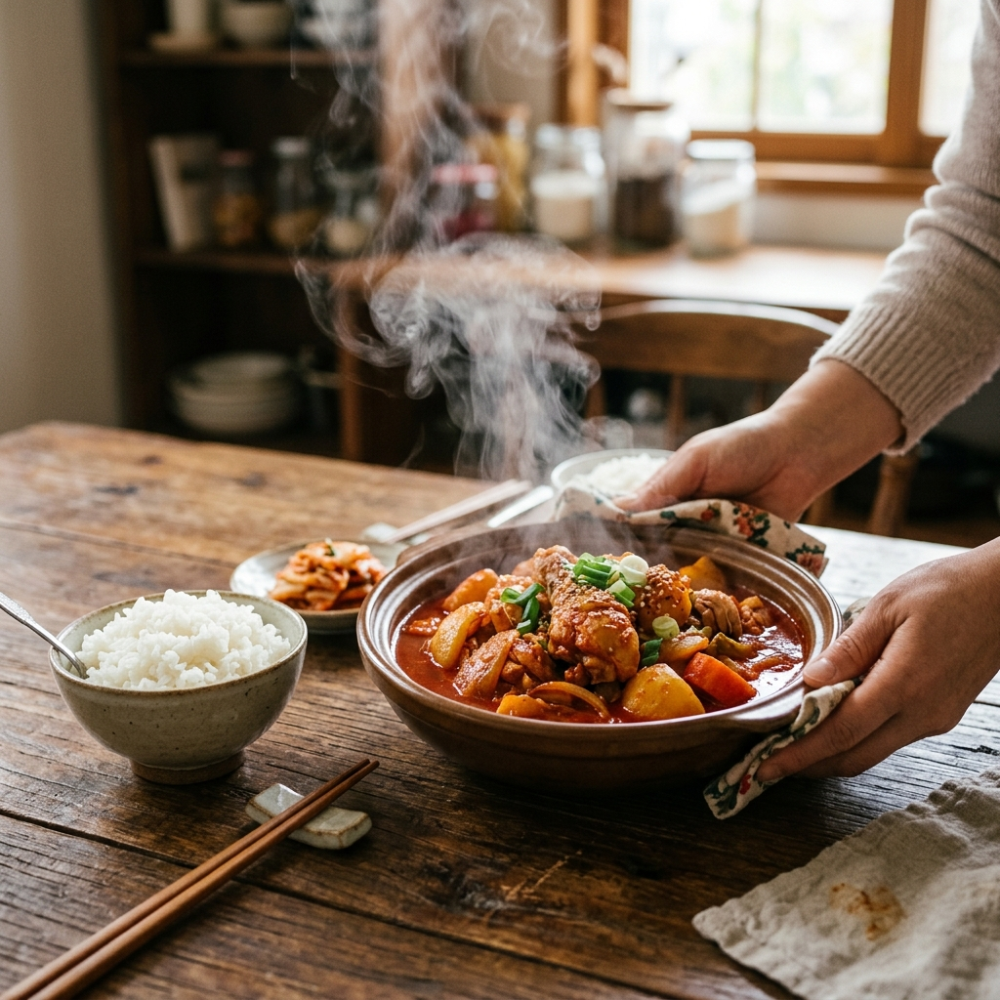

인생 닭볶음탕 황금레시피: 고춧가루 숙성으로 텁텁함 제로, 감칠맛 폭발!
남녀노소 누구나 좋아하는 국민 메뉴 닭볶음탕, 하지만 집에서 만들면 식당에서 먹던 그 깊고 깔끔한 맛이 나지 않아 고민이셨나요? 고추장을 많이 넣으면 텁텁해지고, 간장 위주로 하면 밍밍해지기 십상인데요. 오늘 알려드릴 에디터 추천 황금레시피의 핵심은 바로 고춧가루 숙성 양념장입니다. 텁텁함을 걷어내고 닭고기 속까지 매콤달콤한 양념이 쏙 배어드는 비법 공정을 지금 공개합니다.
1. 실패 없는 닭볶음탕을 위한 재료 준비 (4인 기준)
가장 먼저 신선한 재료가 맛의 절반을 결정합니다. 닭볶음탕용 닭은 1kg에서 1.2kg 사이의 10호~11호 닭이 육질이 가장 부드럽고 양념이 잘 뱁니다. 너무 큰 닭은 질길 수 있으니 주의하세요.
[주재료]: 볶음탕용 닭 1.2kg, 감자 3개, 양파 1개, 당근 1/2개, 대파 1대, 청양고추 2개.
[양념장]: 고춧가루 6큰술, 진간장 8큰술, 설탕 3큰술, 올리고당 1큰술, 다진 마늘 2큰술, 생강청 1/2작은술, 맛술 2큰술, 후춧가루 약간.
여기서 중요한 점은 고추장을 사용하지 않거나, 넣더라도 1큰술 미만으로 아주 소량만 사용하는 것입니다. 고추장의 전분 성분이 국물을 걸쭉하게 만들지만, 자칫 텁텁한 맛의 원인이 되기 때문입니다.

빨간 양념이 식욕을 자극하는 정성 가득한 닭볶음탕 / AI 제작 이미지
2. 맛의 핵심: 고춧가루 양념장 미리 숙성하기
이 레시피의 가장 중요한 포인트인 양념장 숙성 단계입니다. 조리를 시작하기 최소 30분 전, 가능하다면 반나절 전에 미리 양념장을 만들어 냉장고에서 숙성시켜 주세요. 숙성 과정을 거치면 고춧가루의 날내가 사라지고 재료들이 조화롭게 어우러져 깊은 감칠맛을 냅니다.
준비한 양념 재료를 모두 섞은 뒤 랩을 씌워 숙성시키면 고춧가루가 수분을 머금어 색이 더욱 선명해지고 국물에 넣었을 때 겉돌지 않습니다. 이 작은 차이가 바로 '식당 맛'과 '집 맛'을 가르는 결정적인 요인이 됩니다. 시간이 없을 때는 뜨거운 물 1~2큰술을 섞어 고춧가루를 미리 불려주는 것도 좋은 방법입니다.
3. 닭 비린내 완벽 제거: 초간단 전처리 공정
닭고기 특유의 누린내를 잡지 못하면 아무리 맛있는 양념도 소용이 없습니다. 닭은 흐르는 물에 깨끗이 씻으면서 내장 사이의 핏물을 확실히 제거해 주세요. 그 후 끓는 물에 소주나 월계수 잎을 넣고 3~5분간 초벌 삶기를 해줍니다.
초벌 삶기를 하면 불순물과 기름기가 제거되어 국물이 훨씬 깔끔해집니다. 삶아낸 닭은 다시 한번 찬물에 헹궈 물기를 빼둡니다. 이때 닭다리나 가슴살 등 두꺼운 부위에 칼집을 1~2번 넣어주면 나중에 양념이 훨씬 깊숙이 배어들어 끝까지 맛있게 즐길 수 있습니다.

고춧가루의 날내를 잡고 풍미를 더해주는 양념장 숙성 과정 / AI 제작 이미지
4. 부재료 손질: 감자와 당근 '모서리 깎기'의 마법
함께 들어가는 채소 손질에도 정성을 들여보세요. 감자와 당근은 큼직하게 썰되, 모서리 부분을 둥글게 깎아주는 '모서리 다듬기(면치기)'를 추천합니다. 이렇게 하면 조리 중에 채소끼리 부딪쳐 부서지는 것을 막아주어 국물이 탁해지지 않고 깔끔하게 유지됩니다.
양파는 큼직하게 4등분 하고, 대파와 고추는 어긋썰기로 준비합니다. 채소의 크기를 닭고기와 비슷하게 맞춰주면 시각적으로도 훨씬 먹음직스러운 닭볶음탕이 완성됩니다. 특히 감자는 너무 작게 썰면 나중에 형체가 사라질 수 있으니 큼직하게 유지하는 것이 포인트입니다.
5. 조리 1단계: 설탕으로 먼저 단맛 입히기
냄비에 초벌한 닭과 물 600ml(종이컵 3컵 분량)를 넣고 불을 올립니다. 물이 끓기 시작하면 가장 먼저 설탕 3큰술을 먼저 넣고 5분 정도 끓여주세요. 단맛의 분자가 염분의 분자보다 크기 때문에, 설탕을 먼저 넣어야 고기 속까지 단맛이 충분히 배어들어 감칠맛이 살아납니다.
이는 많은 요리 전문가들이 강조하는 '단맛 먼저'의 원리입니다. 간장을 먼저 넣으면 단백질이 응고되어 단맛이 배어들 틈이 없어지기 때문인데요. 이 사소한 순서 하나가 전체적인 맛의 밸런스를 환상적으로 잡아줍니다.
6. 조리 2단계: 양념장 투하와 불 조절의 기술
단맛이 밴 닭고기에 미리 만들어둔 숙성 양념장을 넣고 골고루 풀어줍니다. 이때 불은 강불로 유지하여 한소끔 팔팔 끓여주세요. 양념이 끓어오르기 시작하면 딱딱한 채소인 감자와 당근을 먼저 넣습니다.
국물이 다시 끓기 시작하면 중불로 줄이고 뚜껑을 덮어 20분 정도 은근하게 졸여줍니다. 이 과정에서 닭고기와 감자 속으로 양념이 깊숙이 침투하며 맛이 완성됩니다. 국물이 너무 빨리 줄어든다면 물을 반 컵 정도 보충해 가며 조절해 주세요.

따끈한 밥 한 공기를 뚝딱 비우게 만드는 진정한 밥도둑 / AI 제작 이미지
7. 조리 3단계: 마무리 채소와 숨겨진 비법 한 큰술
감자가 포슬포슬하게 익었는지 젓가락으로 찔러 확인한 뒤, 나머지 양파와 대파, 고추를 넣습니다. 양파가 투명해질 때까지 5분 정도 더 끓여주세요. 여기서 에디터만의 숨겨진 팁은 바로 마지막에 올리고당 1큰술을 둘러주는 것입니다.
올리고당은 단맛보다는 완성된 요리에 먹음직스러운 윤기를 더해주는 역할을 합니다. 불을 끄기 직전에 넣어 가볍게 섞어주면 식당 요리처럼 윤기가 좌르르 흐르는 비주얼이 완성됩니다. 마지막으로 후춧가루를 톡톡 뿌려 풍미를 끌어올려 주세요.
8. 완벽한 즐기기: 국물 비빔밥과 볶음밥 마무리
완성된 닭볶음탕은 넓은 전골 냄비에 옮겨 담아 식탁 위에서 보글보글 끓이며 드시는 것이 가장 맛있습니다. 잘 익은 감자를 으깨어 매콤한 국물과 함께 밥에 비벼 먹으면 그 어떤 산해진미도 부럽지 않습니다.
고기를 다 드신 후 남은 양념에는 김가루와 참기름, 잘게 썬 김치를 넣고 볶음밥으로 마무리하는 것을 잊지 마세요. 냄비 바닥에 눌어붙은 밥알까지 긁어먹는 그 맛이야말로 닭볶음탕 여행의 진정한 엔딩입니다.
9. 에디터의 레시피 총평: 정성이 만든 깊은 맛
닭볶음탕은 흔한 음식이지만, 제대로 된 맛을 내기 위해서는 양념장 숙성과 조리 순서라는 정성이 필요합니다. 오늘 소개해 드린 고춧가루 숙성 비법을 활용하신다면, 더 이상 텁텁한 맛 때문에 고민하지 않으셔도 될 것입니다.
사랑하는 가족을 위해, 혹은 소중한 손님을 위해 오늘 저녁 따끈한 닭볶음탕 한 냄비 어떠신가요? 매콤하고 진한 국물 속에 담긴 정성이 여러분의 식탁을 더욱 풍성하고 행복하게 만들어 줄 것입니다. 맛있는 요리와 함께 즐거운 시간 보내시길 바랍니다!
#닭볶음탕황금레시피
#닭볶음탕양념장
#닭요리추천
#오늘저녁메뉴
#집밥레시피
#매운음식추천
#밥도둑레시피
#쿠킹팁
#요리초보추천
#한국전통요리